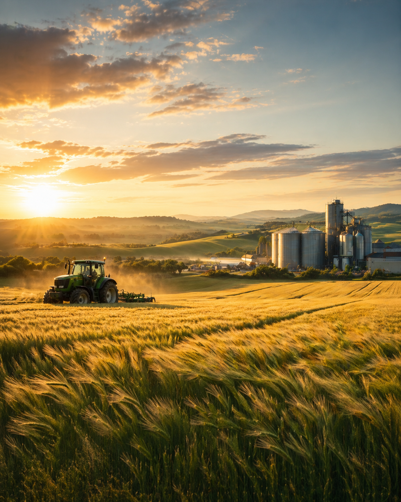

01
Primeiro esforço
O processo começa com a escolha de pegar uma bola de basquete e ir até um espaço para o treino.
Da quadra de Basquete á saúde, esta ralação mostra como a prática de jogar basquete e a saúde humana caminham juntos.
Em treinos, essa conexão revela que o desenvolvimento de boa saúde e estética nasce de esforço em treinos e jogos de basquete.

O processo é apresentado em etapas visuais sólidas para mostrar como um simples e pequeno esforço abre portas para ter um corpo saudável.
O processo começa com a escolha de pegar uma bola de basquete e ir até um espaço para o treino.
Após tem condições para treinar, o treino começa arremessos, dribles, "bandejas", "jumps" e explosão de reação.
treinando com frequência, o corpo vai sofrendo mudanças, e elas podem ser percebidas no dia a dia.
Uma visão visual da cadeia produtiva que liga o campo, a indústria e o cotidiano urbano.
Pequenos fatos que ajudam a entender a relevância da cevada, do malte e do agro sustentável.
A cevada é um dos grãos cultivados há mais tempo pela humanidade e segue tendo grande importância econômica e alimentar.
Uma forma leve de revisar os principais conceitos apresentados no projeto.
O Basquete e o Processo de desenvolver uma boa saúde e um bom físico caminham juntos.
Ter em mente o que deseja treinar e começar a tornar o treino com frequência.
É preciso se comprometer aos treinos, melhorar e aprimorar os fundamnetos e ter uma alimentação saudável.
Praticando o treino e tendo uma alimentação boa impulsiona para a melhoria da saúde, bem estar físico e mental.
Um complemento visual para aprofundar a compreensão do tema e enriquecer a apresentação do projeto.
Uma experiência complementar para apresentar o conteúdo de forma criativa e envolvente.